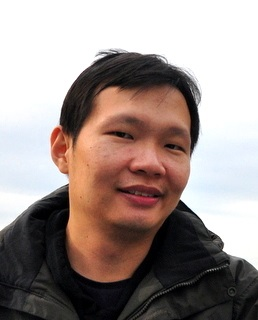

John See Ph.D

johnsee-at-mmu-dot-edu-dot-my
Faculty of Computing and Informatics,
Multimedia University, Cyberjaya 63100, Malaysia
John See is a Senior Lecturer with the Faculty of Computing and Informatics at Multimedia University, Malaysia. He is currently the Chair of the Centre for Visual Computing (CVC) and he leads the Visual Processing (ViPr) Lab. From 2017-2019, he was also a Visiting Research Fellow at Shanghai Jiao Tong University (SJTU) as an award recipient of the Belt and Road Initiative Young Scientist Fellowship.
My research interests span the areas of computer vision and pattern recognition in general, and the emerging fields of affective computing and computational aesthetics. My current research focuses on a the computability of highly subjective tasks: facial micro-expression analysis, aesthetics and emotions from images, as well as a broad spectrum of visual surveillance tasks (activity recognition, long-term analytics, person/group re-identification).
He is currently serving as an Associate Editor of the EURASIP Journal of Image and Video Processing and IEEE Access. He also served as the Technical Program Chair of MMSP 2019. He is a Senior Member of IEEE, and a Member of the IEEE Multimedia Systems and Applications (MSA) Technical Committee for Term 2020-2024.
Recent Works
S.C Hidayati, T.W. Goh, J.-S. G. Chan, C.-C. Hsu, J. See, L.K. Wong, K.-L. Hua, Y. Tsao, W.-H. Cheng
to appear in IEEE Transactions on Multimedia (2020)
Recent News Events & Announcements
- 03/2019: One paper accepted to CVPR.
- 02/2019: I have been appointed Associate Editor of EURASIP Journal of Image and Video Processing.